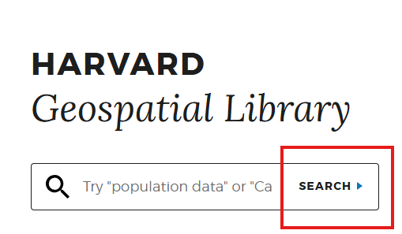

Activity 4
of 5
3. Georeferencing
Understand the value of georeferenced maps and how to start using them in a GIS project.
- Understand why georeferenced maps can be useful when asking and answering spatial questions
- Understand how to find georeferenced maps to use in a GIS project
- Find out how to take next steps in using information from paper maps in a GIS project
In class activity
What is georeferencing?
- Visit Atlascope.org, search for a place in Boston or Cambridge you are interested in exploring on a historical map, and get a sense of the value of georeferencing historical maps by toggling between different georeferenced map layers.
How to search for Harvard Maps that are already georeferenced
- Visit the Harvard Geospatial Library (HGL).

- Click the
Searchbutton.
- In the left-hand side facets, under
InstitutionchooseHarvardand underFormatchooseGeoTIFF.
- Click on some results. Select
Click to Wakeon the map to see the georeferenced map layer.
- Notice the
Download GeoTIFFbutton which gives a file that will work in ArcGIS Pro.
Demo and explore more
Sample data
You can download and explore sample datasets related to this activity from the workshop data homepage, hosted on the Open Science Framework (OSF.io)
- Visit the workshop data homepage.
- Click the three vertical dots icon and select
Download.

- The folder that downloads to your computer contains sample data from all the workshop activities. It is a zipped or compressed file. In order to use it, you will have to
double-clickit on Mac orright-click→ExtractorUncompresson a PC.
4. The sample data for this activity, Activity 3 is in the folder activity3_georeferencing. In this folder you will find the following files:
G7625_1897_W2.tif, a georeferenced TIFF image of the Afghanistan-Pakistan Border Region, 1897.
Follow-along steps
- Search in HOLLIS using the term “Massachusetts” making sure to filter for
Library CatalogandLocation=Harvard Map Collection. - Any map that says
Online Accesscan be georeferenced in a web browser. For the class demo we will use the map Map of Massachusetts : exhibiting the Representative, Senatorial and Councillor districts. - For the class demo we will georeference this map using AllMaps, a tool for georeferencing maps from library collections in a web browser.
- If the scanned image of the map is not streaming online via HOLLIS, you will need to obtain a hard copy of the image on your computer and use ArcGIS Pro to georeference it. The sample layer included with this activity,
G7625_1897_W2.tifis an example of this process.
Make an appointment ; ESRI documentation → Georeference a raster to a referenced layer.